<!DOCTYPE html>
<html lang="fr">
    <head>
        <meta charset="utf-8">
        <meta name="viewport" content="width=device-width, initial-scale=1">

        <title>Récupérer les données du jeu vidéo League of Legends et les exploiter</title>

        <link href="/do-it/assets/node_modules/prismjs/themes/prism-solarizedlight.min.css" rel="stylesheet">
        <link href="/do-it/assets/node_modules/prismjs/plugins/line-numbers/prism-line-numbers.min.css" rel="stylesheet">

        <link href="/do-it/assets/stylesheets/main.css" rel="stylesheet">
    </head>
    <body>
        <script>
        window.MathJax = {
            tex: {
            inlineMath: [
                [
                '$', '$'
                ],
                [
                '\\(', '\\)'
                ]
            ]
            },
            svg: {
            fontCache: 'global'
            }
        };
        </script>
        <script type="text/javascript" id="MathJax-script" src="/do-it/assets/node_modules/mathjax/es5/tex-svg-full.js"></script>

        <header class="border-b-2 border-gray-200 mb-4">
        <div class="max-w-[1000px] mx-auto px-4">
            <div class="min-h-[50px] flex justify-between items-center">
                <a class="mx-2" href="/do-it/">Home</a>
                <div class="flex items-center gap-4 sm:gap-6 ">
                    <a class="" href="/do-it/cs">CS</a>
                    <a class="" href="/do-it/pok">POK</a>
                    <a class="" href="/do-it/mon">MON</a>
                    <a class="" href="/do-it/projets">Projets</a>
                    <a class="hidden sm:block" href="/do-it/promos">Promos</a>
                    <a href="/do-it/search">
                        <svg class="h-5 aspect-square" xmlns="http://www.w3.org/2000/svg" fill="none" viewBox="0 0 24 24" stroke-width="1.5" stroke="currentColor">
                            <path stroke-linecap="round" stroke-linejoin="round" d="M21 21l-5.197-5.197m0 0A7.5 7.5 0 105.196 5.196a7.5 7.5 0 0010.607 10.607z"></path>
                        </svg>
                    </a>
                    <a class="hidden sm:block" href="https://github.com/FrancoisBrucker/do-it" target="_blank">
                        <svg class="h-5 aspect-square" role="img" viewBox="0 0 24 24" xmlns="http://www.w3.org/2000/svg"><title>GitHub</title><path d="M12 .297c-6.63 0-12 5.373-12 12 0 5.303 3.438 9.8 8.205 11.385.6.113.82-.258.82-.577 0-.285-.01-1.04-.015-2.04-3.338.724-4.042-1.61-4.042-1.61C4.422 18.07 3.633 17.7 3.633 17.7c-1.087-.744.084-.729.084-.729 1.205.084 1.838 1.236 1.838 1.236 1.07 1.835 2.809 1.305 3.495.998.108-.776.417-1.305.76-1.605-2.665-.3-5.466-1.332-5.466-5.93 0-1.31.465-2.38 1.235-3.22-.135-.303-.54-1.523.105-3.176 0 0 1.005-.322 3.3 1.23.96-.267 1.98-.399 3-.405 1.02.006 2.04.138 3 .405 2.28-1.552 3.285-1.23 3.285-1.23.645 1.653.24 2.873.12 3.176.765.84 1.23 1.91 1.23 3.22 0 4.61-2.805 5.625-5.475 5.92.42.36.81 1.096.81 2.22 0 1.606-.015 2.896-.015 3.286 0 .315.21.69.825.57C20.565 22.092 24 17.592 24 12.297c0-6.627-5.373-12-12-12"></path></svg>
                    </a>
                </div>
            </div>
        </div>
        </header>

        <main class="max-w-[1000px] mx-auto px-4" data-pagefind-body="">
            
<article class="relative">
<h1 class="mb-1">Récupérer les données du jeu vidéo League of Legends et les exploiter</h1>
<div class="mb-4">
    
        <div class="px-4 flex flex-wrap items-center">
            
                <div class="font-bold">Tags : </div>
            
            <ul class="flex flex-wrap overflow-auto not-prose list-none my-1 mx-0 px-1 gap-1" data-pagefind-meta="Tags">
                
                    <li class="bg-yellow-200 rounded-full px-2" data-pagefind-filter="Tags">POK</li>
                
                    <li class="bg-yellow-200 rounded-full px-2" data-pagefind-filter="Tags">2023-2024</li>
                
                    <li class="bg-yellow-200 rounded-full px-2" data-pagefind-filter="Tags">temps 1</li>
                
                    <li class="bg-yellow-200 rounded-full px-2" data-pagefind-filter="Tags">API</li>
                
                    <li class="bg-yellow-200 rounded-full px-2" data-pagefind-filter="Tags">Flask</li>
                
                    <li class="bg-yellow-200 rounded-full px-2" data-pagefind-filter="Tags">Python</li>
                

            </ul>
            
            
            <div class="hidden" data-pagefind-meta="Type">
                
                    
                
                    
                
                    
                
                    
                
                    
                
                    
                
            </div>
        </div>
    

    
        <div class="px-4 flex flex-wrap items-center">
            <div class="font-bold">Auteurs : </div>
            <ul class="flex flex-wrap not-prose list-none my-1 mx-0 px-1 gap-1" data-pagefind-meta="Auteurs">
                
                    <li class="bg-blue-200 rounded-full px-2" data-pagefind-filter="Auteurs">Samy Diafat</li>
                
            </ul>
        </div>
    

    
</div>

        <p class="mb-4 text-lg">

                Ce POK a pour but de réaliser ma première connexion à une API pour y récupérer des données. L'entreprise Riot Games donne accès aux données de son jeu vidéo en ligne League of Legends à travers une API.L'objectif final est de développer une petite application web permettant d'afficher des données à partir du pseudo d'un joueur

        </p>


    
<div class="quote relative  py-2 drop-shadow rounded rounded-tl-none rounded-bl-none border-solid border-l-8 border-purple-500 bg-purple-100">
<svg class="absolute w-7 h-7 pl-1 pt-0.5 pb-0.5 text-purple-500" xmlns="http://www.w3.org/2000/svg" fill="none" viewBox="0 0 24 24" stroke="currentColor" stroke-width="2">
  <path stroke-linecap="round" stroke-linejoin="round" d="M5 19a2 2 0 01-2-2V7a2 2 0 012-2h4l2 2h4a2 2 0 012 2v1M5 19h14a2 2 0 002-2v-5a2 2 0 00-2-2H9a2 2 0 00-2 2v5a2 2 0 01-2 2z"></path>
</svg>
<div class="pl-8 mr-8">

<a href="/do-it/promos/">Promotions</a><span class="px-1">/</span><a href="/do-it/promos/2023-2024/">2023-2024</a><span class="px-1">/</span><a href="/do-it/promos/2023-2024/Diafat-Samy/">Samy Diafat</a><span class="px-1">/</span><a href="/do-it/promos/2023-2024/Diafat-Samy/pok/">POK de Samy Diafat</a><span class="px-1">/</span><a href="/do-it/promos/2023-2024/Diafat-Samy/pok/temps-1/">Récupérer les données du jeu vidéo League of Legends et les exploiter</a>

</div></div>


<div class="quote relative  py-2 drop-shadow rounded rounded-tl-none rounded-bl-none border-solid border-l-8 border-pink-500 bg-pink-100">
<svg class="absolute w-7 h-7 pl-1 pt-0.5 pb-0.5 text-pink-500" xmlns="http://www.w3.org/2000/svg" fill="none" viewBox="0 0 24 24" stroke="currentColor" stroke-width="2">
  <path stroke-linecap="round" stroke-linejoin="round" d="M12 6.253v13m0-13C10.832 5.477 9.246 5 7.5 5S4.168 5.477 3 6.253v13C4.168 18.477 5.754 18 7.5 18s3.332.477 4.5 1.253m0-13C13.168 5.477 14.754 5 16.5 5c1.747 0 3.332.477 4.5 1.253v13C19.832 18.477 18.247 18 16.5 18c-1.746 0-3.332.477-4.5 1.253"></path>
</svg>
<div class="pl-8 mb-2 mr-8">
<p>POK intermédiaire</p>
</div><div class="pl-8 mr-8">
<p>Avoir les bases en html/css, python (pandas), invit de commande et avoir de la patience.</p>
</div></div>
<h2>Table des matières</h2>
<ol>
<li>
<p><a href="#section-1">Ce que j'ai prévu pour le 1er point POK</a></p>
</li>
<li>
<p><a href="#section-2">Ce que j'ai fait au 1er sprint</a></p>
<ul>
<li><a href="#subsection-1">Faire des requêtes directement sur le site de RiotGames</a></li>
<li><a href="#subsection-2">Automatiser les requêtes sur python</a></li>
<li><a href="#subsection-3">Faire des calculs à l'aide des données récoltées</a></li>
<li><a href="#subsection-4">Utilisation du framework Flask pour développer une petite application</a></li>
</ul>
</li>
<li>
<p><a href="#section-3">Ce que j'ai prévu pour le second point POK</a></p>
</li>
<li>
<p><a href="#section-4">Ce que j'ai fait à la fin du temps 1</a></p>
<ul>
<li><a href="#subsection-5">Page d'accueil</a></li>
<li><a href="#subsection-6">Page du jeu TFT</a></li>
<li><a href="#subsection-7">Page du jeu Valorant</a></li>
<li><a href="#subsection-8">Page du jeu League of Legends</a></li>
<li><a href="#subsection-9">Comparaison avec des statistiques issues du site OP.GG</a></li>
</ul>
</li>
<li>
<p><a href="#section-5">Conclusion</a></p>
</li>
</ol>
<h2>Ce que j'ai prévu pour le 1er point POK<a id="section-1"></a></h2>
<ul>
<li>Faire des reqûetes aux APIs</li>
<li>Nettoyer les données que j'aurai collecté</li>
<li>Analyser les données pour en sortir des informations pertinentes</li>
<li>Bonus : Mettre les informations sur un site web</li>
</ul>
<h2>Ce que j'ai fait au 1er sprint<a id="section-2"></a></h2>
<h3>Faire des requêtes directement sur le site de RiotGames<a id="subsection-1"></a></h3>
<p>Afin d'accéder aux données, j'ai tout d'abord dû récupérer une clef me permettant de faire des requêtes à l'API.</p>
<p>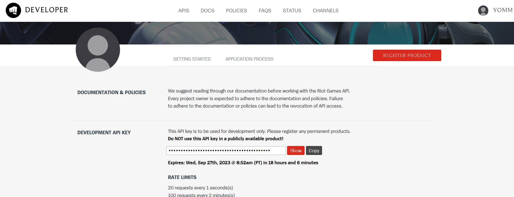</p>
<p>Une fois ma clef récupérée, j'ai tout d'abord pris connaissance de l'ensemble de méthodes mis à notre disposition.</p>
<blockquote>
<p>Il y a plus d'une dizaine de méthodes disponibles pour le jeu League of Legends.</p>
</blockquote>
<p>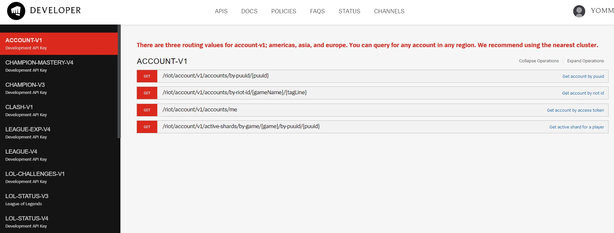</p>
<p>J'ai ensuite testé la requête suivante qui permet de récupérer des informations sur un compte à partir du pseudo :</p>
<p>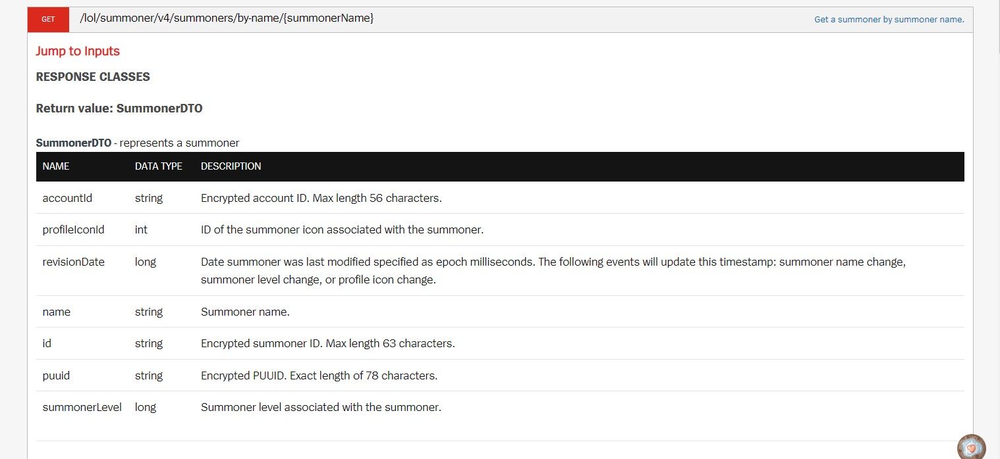</p>
<p>Ce qui m'a permis d'obtenir les données suivantes :</p>
<p>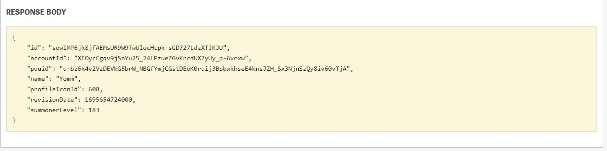</p>
<p>On passe maintenant à un notebook afin d'automatiser tout cela avec python !</p>
<h3>Automatiser les requêtes sur python<a id="subsection-2"></a></h3>
<p>Import de notre clef</p>
<pre class="language-python"><code class="language-python">api_key <span class="token operator">=</span> <span class="token string">'RGAPI-d26162a7-7ea3-4af5-91b3-1087f97591e8'</span></code></pre>
<pre class="language-python"><code class="language-python">api_key</code></pre>
<p>'RGAPI-d26162a7-7ea3-4af5-91b3-1087f97591e8'</p>
<p>On récupère ensuite une URL venant du site de Riot Games : <a href="https://developer.riotgames.com/apis">https://developer.riotgames.com/apis</a></p>
<p>On s'interesse tout d'abord aux données d'un compte en particulier, on utilise ici l'API V4</p>
<pre class="language-python"><code class="language-python">pseudo <span class="token operator">=</span> <span class="token string">'Yomm'</span></code></pre>
<pre class="language-python"><code class="language-python">api_url <span class="token operator">=</span> <span class="token string">'https://euw1.api.riotgames.com/lol/summoner/v4/summoners/by-name/'</span> <span class="token operator">+</span> pseudo</code></pre>
<pre class="language-python"><code class="language-python">api_url</code></pre>
<p>'<a href="https://euw1.api.riotgames.com/lol/summoner/v4/summoners/by-name/Yomm">https://euw1.api.riotgames.com/lol/summoner/v4/summoners/by-name/Yomm</a>'</p>
<p>Afin d'avoir l'autorisation d'accès à l'API, nous devons ajouter notre clef à l'url</p>
<pre class="language-python"><code class="language-python">api_url <span class="token operator">=</span> api_url <span class="token operator">+</span> <span class="token string">'?api_key='</span> <span class="token operator">+</span> api_key</code></pre>
<pre class="language-python"><code class="language-python">api_url</code></pre>
<p>'<a href="https://euw1.api.riotgames.com/lol/summoner/v4/summoners/by-name/Yomm?api_key=RGAPI-d26162a7-7ea3-4af5-91b3-1087f97591e8">https://euw1.api.riotgames.com/lol/summoner/v4/summoners/by-name/Yomm?api_key=RGAPI-d26162a7-7ea3-4af5-91b3-1087f97591e8</a>'</p>
<p>On importe ensuite la bibliothèque requests qui va nous permettre de faire des requêtes via python.</p>
<blockquote>
<p>La bibliothèque requests en Python est utilisée pour envoyer des requêtes HTTP vers des serveurs web et interagir avec des ressources en ligne. Elle permet de créer des applications qui peuvent effectuer des opérations telles que l'envoi de requêtes GET, POST, PUT, DELETE, etc., pour récupérer des données depuis des API, envoyer des données à des serveurs, télécharger des fichiers à partir d'Internet, et bien plus encore.</p>
</blockquote>
<pre class="language-python"><code class="language-python"><span class="token keyword">import</span> requests</code></pre>
<pre class="language-python"><code class="language-python">requests<span class="token punctuation">.</span>get<span class="token punctuation">(</span>api_url<span class="token punctuation">)</span></code></pre>
<p>&lt;Response [200]&gt;</p>
<p>La réponse nous permet de savoir l'état de la requête envoyée, 200 correspond à une requête réussi !</p>
<pre class="language-python"><code class="language-python">resp <span class="token operator">=</span> requests<span class="token punctuation">.</span>get<span class="token punctuation">(</span>api_url<span class="token punctuation">)</span>
player_info <span class="token operator">=</span> resp<span class="token punctuation">.</span>json<span class="token punctuation">(</span><span class="token punctuation">)</span>
player_info</code></pre>
<p>{'id': 'sowIMP6jk8jfAEMsUR9W9TwUlqcHLpk-sGD727LdzXTJKJU',
'accountId': 'XEOycCgqv9jSoYu25_24LPzueZGvKrcdUX7yUy_p-6vrxw',
'puuid': 'u-bz6k4v2VzDEVkG5brW_NBGfYmjCGstDEoK0ruij3BpbwkhseE4knsJZH_Sx3NjnSzQy8iv60vTjA',
'name': 'Yomm',
'profileIconId': 608,
'revisionDate': 1697225190000,
'summonerLevel': 184}</p>
<p>La méthode .json() est appelée, et le contenu JSON de la réponse est automatiquement analysé et converti en une structure de données Python</p>
<p>On voit que player_info est un dictionnaire contenant plusieurs informations</p>
<pre class="language-python"><code class="language-python">player_info<span class="token punctuation">.</span>keys<span class="token punctuation">(</span><span class="token punctuation">)</span></code></pre>
<p>dict_keys(['id', 'accountId', 'puuid', 'name', 'profileIconId', 'revisionDate', 'summonerLevel'])</p>
<p>On peut par exemple obtenir l'ID associée à un pseudo</p>
<pre class="language-python"><code class="language-python">player_info<span class="token punctuation">[</span><span class="token string">'id'</span><span class="token punctuation">]</span></code></pre>
<h3>Faire des calculs à l'aide des données récoltées<a id="subsection-3"></a></h3>
<p>Par la suite, j'ai créé des fonctions me permettant de faire des requêtes dans plusieurs sources différentes afin de croiser les informations, et de faire des calculs de moyenne par exemple.</p>
<div class="relative drop-shadow rounded rounded-tl-none rounded-bl-none border-solid border-l-8 border-indigo-500 bg-indigo-100 cursor-pointer select-none">
<details class="group">
<summary class="list-none py-0.5">
<svg class="group-open:hidden absolute w-7 h-7 pl-1 pt-0.5 text-indigo-500" xmlns="http://www.w3.org/2000/svg" fill="none" viewBox="0 0 24 24" stroke="currentColor" stroke-width="2">
  <path stroke-linecap="round" stroke-linejoin="round" d="M9 5l7 7-7 7"></path>
</svg>
<svg class="group-open:block hidden absolute w-7 h-7 pl-1 pt-0.5 text-indigo-500" xmlns="http://www.w3.org/2000/svg" fill="none" viewBox="0 0 24 24" stroke="currentColor" stroke-width="2">
  <path stroke-linecap="round" stroke-linejoin="round" d="M19 9l-7 7-7-7"></path>
</svg>
<div class="pl-8 font-bold inline-block group-open:select-text">
<p>Cliquez pour voir le code</p>
</div>
<svg class="group-open:hidden inline-block pl-3 w-10 text-indigo-500" xmlns="http://www.w3.org/2000/svg" fill="none" viewBox="0 0 24 24" stroke="currentColor" stroke-width="2">
  <path stroke-linecap="round" stroke-linejoin="round" d="M5 12h.01M12 12h.01M19 12h.01M6 12a1 1 0 11-2 0 1 1 0 012 0zm7 0a1 1 0 11-2 0 1 1 0 012 0zm7 0a1 1 0 11-2 0 1 1 0 012 0z"></path>
</svg>
</summary>
<div class="mx-8 pb-2 cursor-auto select-text">
<pre class="language-python"><code class="language-python"><span class="token comment"># Cette fonction permet de récupérer le puuid d'un joueur à partir du nom d'invocateur, de la région, et d'une clef api</span>
<span class="token keyword">def</span> <span class="token function">get_puuid</span><span class="token punctuation">(</span>summoner_name<span class="token punctuation">,</span> region<span class="token punctuation">,</span> api_key<span class="token punctuation">)</span><span class="token punctuation">:</span>
    api_url <span class="token operator">=</span> <span class="token punctuation">(</span>
        <span class="token string">"https://"</span> <span class="token operator">+</span> 
        region <span class="token operator">+</span>
        <span class="token string">".api.riotgames.com/lol/summoner/v4/summoners/by-name/"</span> <span class="token operator">+</span>
        summoner_name <span class="token operator">+</span>
        <span class="token string">"?api_key="</span> <span class="token operator">+</span>
        api_key
    <span class="token punctuation">)</span>
    resp <span class="token operator">=</span> requests<span class="token punctuation">.</span>get<span class="token punctuation">(</span>api_url<span class="token punctuation">)</span>
    player_info <span class="token operator">=</span> resp<span class="token punctuation">.</span>json<span class="token punctuation">(</span><span class="token punctuation">)</span>
    puuid <span class="token operator">=</span> player_info<span class="token punctuation">[</span><span class="token string">'puuid'</span><span class="token punctuation">]</span>
    <span class="token keyword">return</span> puuid  


<span class="token comment"># cette fonction permet de récupérer les identifiants des 20 dernières parties d'un joueur</span>
<span class="token keyword">def</span> <span class="token function">get_match_ids</span><span class="token punctuation">(</span>puuid<span class="token punctuation">,</span> mass_region<span class="token punctuation">,</span> api_key<span class="token punctuation">)</span><span class="token punctuation">:</span>
    api_url <span class="token operator">=</span> <span class="token punctuation">(</span>
        <span class="token string">"https://"</span> <span class="token operator">+</span>
        mass_region <span class="token operator">+</span>
        <span class="token string">".api.riotgames.com/lol/match/v5/matches/by-puuid/"</span> <span class="token operator">+</span>
        puuid <span class="token operator">+</span> 
        <span class="token string">"/ids?start=0&amp;count=20"</span> <span class="token operator">+</span> 
        <span class="token string">"&amp;api_key="</span> <span class="token operator">+</span> 
        api_key
    <span class="token punctuation">)</span>   
    <span class="token comment"># we need to add this "while" statement so that we continuously loop until it's successful</span>
    <span class="token keyword">while</span> <span class="token boolean">True</span><span class="token punctuation">:</span>
        resp <span class="token operator">=</span> requests<span class="token punctuation">.</span>get<span class="token punctuation">(</span>api_url<span class="token punctuation">)</span>
        
        <span class="token comment"># whenever we see a 429, we sleep for 10 seconds and then restart from the top of the "while" loop</span>
        <span class="token keyword">if</span> resp<span class="token punctuation">.</span>status_code <span class="token operator">==</span> <span class="token number">429</span><span class="token punctuation">:</span>
            <span class="token keyword">print</span><span class="token punctuation">(</span><span class="token string">"Rate Limit hit, sleeping for 10 seconds"</span><span class="token punctuation">)</span>
            time<span class="token punctuation">.</span>sleep<span class="token punctuation">(</span><span class="token number">10</span><span class="token punctuation">)</span>
            <span class="token comment"># continue means start the loop again</span>
            <span class="token keyword">continue</span>
            
        <span class="token comment"># if resp.status_code isn't 429, then we carry on to the end of the function and return the data</span>
        resp <span class="token operator">=</span> requests<span class="token punctuation">.</span>get<span class="token punctuation">(</span>api_url<span class="token punctuation">)</span>
        match_ids <span class="token operator">=</span> resp<span class="token punctuation">.</span>json<span class="token punctuation">(</span><span class="token punctuation">)</span>
        <span class="token keyword">return</span> match_ids 


<span class="token comment"># Cette fonction permet de récupérer les données d'une partie</span>
<span class="token keyword">def</span> <span class="token function">get_match_data</span><span class="token punctuation">(</span>match_id<span class="token punctuation">,</span> mass_region<span class="token punctuation">,</span> api_key<span class="token punctuation">)</span><span class="token punctuation">:</span>
    api_url <span class="token operator">=</span> <span class="token punctuation">(</span>
        <span class="token string">"https://"</span> <span class="token operator">+</span> 
        mass_region <span class="token operator">+</span> 
        <span class="token string">".api.riotgames.com/lol/match/v5/matches/"</span> <span class="token operator">+</span>
        match_id <span class="token operator">+</span> 
        <span class="token string">"?api_key="</span> <span class="token operator">+</span> 
        api_key
    <span class="token punctuation">)</span>   
    <span class="token comment"># we need to add this "while" statement so that we continuously loop until it's successful</span>
    <span class="token keyword">while</span> <span class="token boolean">True</span><span class="token punctuation">:</span>
        resp <span class="token operator">=</span> requests<span class="token punctuation">.</span>get<span class="token punctuation">(</span>api_url<span class="token punctuation">)</span>
        
        <span class="token comment"># whenever we see a 429, we sleep for 10 seconds and then restart from the top of the "while" loop</span>
        <span class="token keyword">if</span> resp<span class="token punctuation">.</span>status_code <span class="token operator">==</span> <span class="token number">429</span><span class="token punctuation">:</span>
            <span class="token keyword">print</span><span class="token punctuation">(</span><span class="token string">"Rate Limit hit, sleeping for 10 seconds"</span><span class="token punctuation">)</span>
            time<span class="token punctuation">.</span>sleep<span class="token punctuation">(</span><span class="token number">10</span><span class="token punctuation">)</span>
            <span class="token comment"># continue means start the loop again</span>
            <span class="token keyword">continue</span>
            
        <span class="token comment"># if resp.status_code isn't 429, then we carry on to the end of the function and return the data</span>
        resp <span class="token operator">=</span> requests<span class="token punctuation">.</span>get<span class="token punctuation">(</span>api_url<span class="token punctuation">)</span>
        match_data <span class="token operator">=</span> resp<span class="token punctuation">.</span>json<span class="token punctuation">(</span><span class="token punctuation">)</span>
        <span class="token keyword">return</span> match_data </code></pre>
</div>
</details>     
</div>
<pre class="language-python"><code class="language-python">pseudo <span class="token operator">=</span> <span class="token string">'Yomm'</span>
region <span class="token operator">=</span> <span class="token string">'euw1'</span>
mass_region <span class="token operator">=</span> <span class="token string">'EUROPE'</span>
</code></pre>
<pre class="language-python"><code class="language-python">get_puuid<span class="token punctuation">(</span>pseudo<span class="token punctuation">,</span>region<span class="token punctuation">,</span>api_key<span class="token punctuation">)</span></code></pre>
<p>'u-bz6k4v2VzDEVkG5brW_NBGfYmjCGstDEoK0ruij3BpbwkhseE4knsJZH_Sx3NjnSzQy8iv60vTjA'</p>
<pre class="language-python"><code class="language-python">puuid_player <span class="token operator">=</span> get_puuid<span class="token punctuation">(</span>pseudo<span class="token punctuation">,</span>region<span class="token punctuation">,</span>api_key<span class="token punctuation">)</span>
id_matches <span class="token operator">=</span> get_match_ids<span class="token punctuation">(</span>puuid_player<span class="token punctuation">,</span> mass_region<span class="token punctuation">,</span> api_key<span class="token punctuation">)</span>
<span class="token keyword">print</span><span class="token punctuation">(</span><span class="token string">'Les identifiants des 20 dernières parties de'</span><span class="token punctuation">,</span>pseudo<span class="token punctuation">,</span><span class="token string">'sont'</span><span class="token punctuation">,</span>id_matches<span class="token punctuation">)</span></code></pre>
<p>Les identifiants des 20 dernières parties de Yomm sont ['EUW1_6620612418', 'EUW1_6620591242', 'EUW1_6620117730', 'EUW1_6616569027', 'EUW1_6616516559', 'EUW1_6615412808', 'EUW1_6611335474', 'EUW1_6611256844', 'EUW1_6610248381', 'EUW1_6610147341', 'EUW1_6609656368', 'EUW1_6607254752', 'EUW1_6607085859', 'EUW1_6606463762', 'EUW1_6603360397', 'EUW1_6603288425', 'EUW1_6603210097', 'EUW1_6601582307', 'EUW1_6601554856', 'EUW1_6600766557']</p>
<pre class="language-python"><code class="language-python"><span class="token comment"># Fonction permettant de récupérer les données d'un joueur à partie des données d'une partie et d'un ID</span>
<span class="token keyword">def</span> <span class="token function">find_player_data</span><span class="token punctuation">(</span>match_data<span class="token punctuation">,</span> puuid<span class="token punctuation">)</span><span class="token punctuation">:</span>
    participants <span class="token operator">=</span> match_data<span class="token punctuation">[</span><span class="token string">'metadata'</span><span class="token punctuation">]</span><span class="token punctuation">[</span><span class="token string">'participants'</span><span class="token punctuation">]</span>
    player_index <span class="token operator">=</span> participants<span class="token punctuation">.</span>index<span class="token punctuation">(</span>puuid<span class="token punctuation">)</span>
    player_data <span class="token operator">=</span> match_data<span class="token punctuation">[</span><span class="token string">'info'</span><span class="token punctuation">]</span><span class="token punctuation">[</span><span class="token string">'participants'</span><span class="token punctuation">]</span><span class="token punctuation">[</span>player_index<span class="token punctuation">]</span>
    <span class="token keyword">return</span> player_data</code></pre>
<p>Si l'on veut regarder uniquement une info</p>
<pre class="language-python"><code class="language-python"><span class="token keyword">print</span><span class="token punctuation">(</span>data<span class="token punctuation">)</span>
data<span class="token punctuation">[</span><span class="token string">'kda'</span><span class="token punctuation">]</span></code></pre>
<p champion:="" [TwistedFate,="" TwistedFate,="" Talon,="" Taliyah,="" KSante,="" Gangplank,="" Gangplank],="" kills:="" [4,="" 7,="" 6,="" 3,="" 2,="" 1,="" 4,="" 18,="" 8,="" 5,="" 15,="" 14,="" 9,="" 14],="" deaths:="" [11,="" 11,="" 19,="" 10,="" 12,="" 13,="" 17,="" 16,="" 8],="" assists:="" 3],="" kda:="" [5.0,="" 8.333333333333334,="" 6.636363636363637,="" 3.526315789473684,="" 2.5454545454545454,="" 1.2857142857142856,="" 4.8,="" 19.0,="" 1.4444444444444444,="" 8.75,="" 5.75,="" 3.2142857142857144,="" 5.615384615384615,="" 2.5384615384615383,="" 5.777777777777778,="" 16.076923076923077,="" 14.75,="" 9.411764705882353,="" 5.3125,="" 14.375],="" win:="" [Défaite,="" Défaite,="" Victoire,="" Victoire]=""></p>
<p>[5.0,
8.333333333333334,
6.636363636363637,
3.526315789473684,
2.5454545454545454,
1.2857142857142856,
4.8,
19.0,
1.4444444444444444,
8.75,
5.75,
3.2142857142857144,
5.615384615384615,
2.5384615384615383,
5.777777777777778,
16.076923076923077,
14.75,
9.411764705882353,
5.3125,
14.375]</p>
<p>Vous pouvez trouver l'ensemble de mes fonctions sur mon github ! lien github</p>
<h3>Utilisation du framework Flask pour développer une petite application<a id="subsection-4"></a></h3>
<p>Enfin, voici le code permettant d'utiliser Flask et d'avoir une petite interface graphique</p>
<div class="relative drop-shadow rounded rounded-tl-none rounded-bl-none border-solid border-l-8 border-indigo-500 bg-indigo-100 cursor-pointer select-none">
<details class="group">
<summary class="list-none py-0.5">
<svg class="group-open:hidden absolute w-7 h-7 pl-1 pt-0.5 text-indigo-500" xmlns="http://www.w3.org/2000/svg" fill="none" viewBox="0 0 24 24" stroke="currentColor" stroke-width="2">
  <path stroke-linecap="round" stroke-linejoin="round" d="M9 5l7 7-7 7"></path>
</svg>
<svg class="group-open:block hidden absolute w-7 h-7 pl-1 pt-0.5 text-indigo-500" xmlns="http://www.w3.org/2000/svg" fill="none" viewBox="0 0 24 24" stroke="currentColor" stroke-width="2">
  <path stroke-linecap="round" stroke-linejoin="round" d="M19 9l-7 7-7-7"></path>
</svg>
<div class="pl-8 font-bold inline-block group-open:select-text">
<p>Cliquez pour voir le code</p>
</div>
<svg class="group-open:hidden inline-block pl-3 w-10 text-indigo-500" xmlns="http://www.w3.org/2000/svg" fill="none" viewBox="0 0 24 24" stroke="currentColor" stroke-width="2">
  <path stroke-linecap="round" stroke-linejoin="round" d="M5 12h.01M12 12h.01M19 12h.01M6 12a1 1 0 11-2 0 1 1 0 012 0zm7 0a1 1 0 11-2 0 1 1 0 012 0zm7 0a1 1 0 11-2 0 1 1 0 012 0z"></path>
</svg>
</summary>
<div class="mx-8 pb-2 cursor-auto select-text">
<pre class="language-python"><code class="language-python"><span class="token keyword">from</span> flask <span class="token keyword">import</span> Flask<span class="token punctuation">,</span> render_template<span class="token punctuation">,</span>request
app <span class="token operator">=</span> Flask<span class="token punctuation">(</span>__name__<span class="token punctuation">)</span>

<span class="token decorator annotation punctuation">@app<span class="token punctuation">.</span>route</span><span class="token punctuation">(</span><span class="token string">"/"</span><span class="token punctuation">)</span>
<span class="token decorator annotation punctuation">@app<span class="token punctuation">.</span>route</span><span class="token punctuation">(</span><span class="token string">"/home"</span><span class="token punctuation">)</span>
<span class="token keyword">def</span> <span class="token function">home</span><span class="token punctuation">(</span><span class="token punctuation">)</span><span class="token punctuation">:</span>
    <span class="token keyword">return</span> render_template<span class="token punctuation">(</span><span class="token string">"homepage.html"</span><span class="token punctuation">)</span>
 
<span class="token decorator annotation punctuation">@app<span class="token punctuation">.</span>route</span><span class="token punctuation">(</span><span class="token string">"/league"</span><span class="token punctuation">)</span>
<span class="token keyword">def</span> <span class="token function">search</span><span class="token punctuation">(</span><span class="token punctuation">)</span><span class="token punctuation">:</span>
    <span class="token keyword">return</span> render_template<span class="token punctuation">(</span><span class="token string">"league.html"</span><span class="token punctuation">)</span>

<span class="token decorator annotation punctuation">@app<span class="token punctuation">.</span>route</span><span class="token punctuation">(</span><span class="token string">"/tft"</span><span class="token punctuation">)</span>
<span class="token keyword">def</span> <span class="token function">datapage</span><span class="token punctuation">(</span><span class="token punctuation">)</span><span class="token punctuation">:</span>
    <span class="token keyword">return</span> render_template<span class="token punctuation">(</span><span class="token string">"tft.html"</span><span class="token punctuation">)</span>

<span class="token decorator annotation punctuation">@app<span class="token punctuation">.</span>route</span><span class="token punctuation">(</span><span class="token string">"/valorant"</span><span class="token punctuation">)</span>
<span class="token keyword">def</span> <span class="token function">datapage2</span><span class="token punctuation">(</span><span class="token punctuation">)</span><span class="token punctuation">:</span>
    <span class="token keyword">return</span> render_template<span class="token punctuation">(</span><span class="token string">"valorant.html"</span><span class="token punctuation">)</span>


<span class="token decorator annotation punctuation">@app<span class="token punctuation">.</span>route</span><span class="token punctuation">(</span><span class="token string">'/submit'</span><span class="token punctuation">,</span>methods <span class="token operator">=</span> <span class="token punctuation">[</span><span class="token string">'POST'</span><span class="token punctuation">,</span> <span class="token string">'GET'</span><span class="token punctuation">]</span><span class="token punctuation">)</span>
<span class="token keyword">def</span> <span class="token function">submit</span><span class="token punctuation">(</span><span class="token punctuation">)</span><span class="token punctuation">:</span>
    <span class="token keyword">print</span><span class="token punctuation">(</span><span class="token string">'je rentre dans submit'</span><span class="token punctuation">)</span>
    <span class="token keyword">if</span> request<span class="token punctuation">.</span>method <span class="token operator">==</span> <span class="token string">'POST'</span><span class="token punctuation">:</span>
        pseudo <span class="token operator">=</span> request<span class="token punctuation">.</span>form<span class="token punctuation">[</span><span class="token string">'nm'</span><span class="token punctuation">]</span>
        <span class="token keyword">return</span> <span class="token string-interpolation"><span class="token string">f"Login successfully by POST method, Hello </span><span class="token interpolation"><span class="token punctuation">{</span>pseudo<span class="token punctuation">}</span></span><span class="token string">"</span></span>
    <span class="token keyword">else</span><span class="token punctuation">:</span>
        pseudo <span class="token operator">=</span> request<span class="token punctuation">.</span>args<span class="token punctuation">.</span>get<span class="token punctuation">(</span><span class="token string">'nm'</span><span class="token punctuation">)</span>
        data_player_ranked <span class="token operator">=</span> get_data_champion<span class="token punctuation">(</span>pseudo<span class="token punctuation">,</span>region<span class="token punctuation">,</span>api_key<span class="token punctuation">)</span>
        data_player <span class="token operator">=</span> get_player_data<span class="token punctuation">(</span>pseudo<span class="token punctuation">,</span>region<span class="token punctuation">,</span>api_key<span class="token punctuation">)</span>
        <span class="token comment">#print('bouton activé')</span>
        <span class="token keyword">print</span><span class="token punctuation">(</span><span class="token string">'le pseudo du site'</span><span class="token punctuation">)</span>
        <span class="token keyword">print</span><span class="token punctuation">(</span>pseudo<span class="token punctuation">)</span>
        <span class="token keyword">if</span> pseudo<span class="token punctuation">:</span>
            <span class="token comment">#data_player_ranked = get_data_champion(pseudo,region,api_key)</span>
            <span class="token keyword">print</span><span class="token punctuation">(</span>data_player_ranked<span class="token punctuation">)</span>
            <span class="token comment">#data_player = get_player_data(pseudo,region,api_key)</span>
            icone <span class="token operator">=</span> data_player<span class="token punctuation">[</span><span class="token string">'icon_id'</span><span class="token punctuation">]</span><span class="token punctuation">[</span><span class="token number">0</span><span class="token punctuation">]</span>
            rank_flex <span class="token operator">=</span> data_player<span class="token punctuation">[</span><span class="token string">'rank_flex'</span><span class="token punctuation">]</span>
            rank_solo <span class="token operator">=</span> data_player<span class="token punctuation">[</span><span class="token string">'rank_solo'</span><span class="token punctuation">]</span>
            rank_flex_icon <span class="token operator">=</span> change_rank<span class="token punctuation">(</span>data_player<span class="token punctuation">[</span><span class="token string">'rank_flex'</span><span class="token punctuation">]</span><span class="token punctuation">)</span>
            rank_solo_icon <span class="token operator">=</span> change_rank<span class="token punctuation">(</span>data_player<span class="token punctuation">[</span><span class="token string">'rank_solo'</span><span class="token punctuation">]</span><span class="token punctuation">)</span>
            summoner_level <span class="token operator">=</span> data_player<span class="token punctuation">[</span><span class="token string">'summoner_level'</span><span class="token punctuation">]</span><span class="token punctuation">[</span><span class="token number">0</span><span class="token punctuation">]</span>
                
            champ_solo <span class="token operator">=</span> data_player_ranked<span class="token punctuation">[</span><span class="token string">'solo'</span><span class="token punctuation">]</span><span class="token punctuation">[</span><span class="token string">'Champion_solo'</span><span class="token punctuation">]</span>
            champ_flex <span class="token operator">=</span>data_player_ranked<span class="token punctuation">[</span><span class="token string">'flex'</span><span class="token punctuation">]</span><span class="token punctuation">[</span><span class="token string">'Champion_flex'</span><span class="token punctuation">]</span>
            winrate_solo <span class="token operator">=</span> <span class="token builtin">round</span><span class="token punctuation">(</span>data_player_ranked<span class="token punctuation">[</span><span class="token string">'solo'</span><span class="token punctuation">]</span><span class="token punctuation">[</span><span class="token string">'Winrate_solo'</span><span class="token punctuation">]</span> <span class="token operator">*</span> <span class="token number">100</span><span class="token punctuation">)</span>
            winrate_flex <span class="token operator">=</span> <span class="token builtin">round</span><span class="token punctuation">(</span>data_player_ranked<span class="token punctuation">[</span><span class="token string">'flex'</span><span class="token punctuation">]</span><span class="token punctuation">[</span><span class="token string">'Winrate_flex'</span><span class="token punctuation">]</span> <span class="token operator">*</span> <span class="token number">100</span><span class="token punctuation">)</span>
            
            
            <span class="token keyword">print</span><span class="token punctuation">(</span>champ_solo<span class="token punctuation">,</span>champ_flex<span class="token punctuation">,</span>winrate_solo<span class="token punctuation">,</span>winrate_flex<span class="token punctuation">)</span>
            <span class="token keyword">print</span><span class="token punctuation">(</span><span class="token string">'pseudo='</span><span class="token punctuation">,</span>pseudo<span class="token punctuation">)</span>
            <span class="token keyword">print</span><span class="token punctuation">(</span><span class="token string">'lvl='</span><span class="token punctuation">,</span>summoner_level<span class="token punctuation">)</span>
            <span class="token keyword">print</span><span class="token punctuation">(</span><span class="token string">'rank solo'</span><span class="token punctuation">,</span>rank_solo<span class="token punctuation">)</span>
            <span class="token keyword">print</span><span class="token punctuation">(</span><span class="token string">'rank flex'</span><span class="token punctuation">,</span>rank_flex<span class="token punctuation">)</span>
            <span class="token keyword">print</span><span class="token punctuation">(</span><span class="token string">'icone solo'</span><span class="token punctuation">,</span>rank_solo_icon<span class="token punctuation">)</span>
            <span class="token keyword">print</span><span class="token punctuation">(</span><span class="token string">'icone flex'</span><span class="token punctuation">,</span>rank_flex_icon<span class="token punctuation">)</span>
            <span class="token keyword">print</span><span class="token punctuation">(</span><span class="token string">'icone joueur'</span><span class="token punctuation">,</span>icone<span class="token punctuation">)</span>
            <span class="token keyword">print</span><span class="token punctuation">(</span>data_player_ranked<span class="token punctuation">)</span>
            <span class="token keyword">return</span> render_template<span class="token punctuation">(</span><span class="token string">"datapage.html"</span><span class="token punctuation">,</span>pseudo<span class="token operator">=</span>pseudo<span class="token punctuation">,</span>summoner_level<span class="token operator">=</span>summoner_level<span class="token punctuation">,</span>icone<span class="token operator">=</span>icone<span class="token punctuation">,</span>rank_flex<span class="token operator">=</span>rank_flex<span class="token punctuation">,</span>rank_solo<span class="token operator">=</span>rank_solo<span class="token punctuation">,</span>rank_flex_icon<span class="token operator">=</span>rank_flex_icon<span class="token punctuation">,</span>rank_solo_icon<span class="token operator">=</span>rank_solo_icon<span class="token punctuation">,</span>champ_solo<span class="token operator">=</span>champ_solo<span class="token punctuation">,</span>champ_flex<span class="token operator">=</span>champ_flex<span class="token punctuation">,</span>winrate_solo<span class="token operator">=</span>winrate_solo<span class="token punctuation">,</span>winrate_flex<span class="token operator">=</span>winrate_flex<span class="token punctuation">)</span>
        <span class="token keyword">else</span><span class="token punctuation">:</span>
            <span class="token keyword">return</span> <span class="token string">"Aucun pseudo n'a été spécifié dans la demande GET."</span>
   
<span class="token keyword">if</span> __name__ <span class="token operator">==</span><span class="token string">"__main__"</span><span class="token punctuation">:</span>  
    app<span class="token punctuation">.</span>run<span class="token punctuation">(</span><span class="token punctuation">)</span></code></pre>
<p>* Serving Flask app &quot;<strong>main</strong>&quot; (lazy loading)
* Environment: production
WARNING: This is a development server. Do not use it in a production deployment.
Use a production WSGI server instead.
* Debug mode: off</p>
<p>* Running on <a href="http://127.0.0.1:5000/">http://127.0.0.1:5000/</a> (Press CTRL+C to quit)
127.0.0.1 - - [16/Oct/2023 18:02:09] &quot;GET / HTTP/1.1&quot; 200 -
127.0.0.1 - - [16/Oct/2023 18:02:09] &quot;GET /static/style.css HTTP/1.1&quot; 404 -
127.0.0.1 - - [16/Oct/2023 18:02:09] &quot;GET / HTTP/1.1&quot; 200 -
127.0.0.1 - - [16/Oct/2023 18:02:10] &quot;GET /league HTTP/1.1&quot; 200 -
127.0.0.1 - - [16/Oct/2023 18:02:10] &quot;GET /static/style.css HTTP/1.1&quot; 404 -
127.0.0.1 - - [16/Oct/2023 18:02:10] &quot;GET /league HTTP/1.1&quot; 200 -</p>
<p>je rentre dans submit
Récupération des statistiques en classés
Récupération des parties classés
Rate Limit hit, sleeping for 10 seconds
Rate Limit hit, sleeping for 10 seconds
Rate Limit hit, sleeping for 10 seconds
Rate Limit hit, sleeping for 10 seconds
Rate Limit hit, sleeping for 10 seconds
Rate Limit hit, sleeping for 10 seconds
Rate Limit hit, sleeping for 10 seconds
Rate Limit hit, sleeping for 10 seconds
Rate Limit hit, sleeping for 10 seconds
Rate Limit hit, sleeping for 10 seconds
Récupération des parties classés
Rate Limit hit, sleeping for 10 seconds
Rate Limit hit, sleeping for 10 seconds
Rate Limit hit, sleeping for 10 seconds
Rate Limit hit, sleeping for 10 seconds
Rate Limit hit, sleeping for 10 seconds
Rate Limit hit, sleeping for 10 seconds
Rate Limit hit, sleeping for 10 seconds
Rate Limit hit, sleeping for 10 seconds
Rate Limit hit, sleeping for 10 seconds
Rate Limit hit, sleeping for 10 seconds</p>
<p>127.0.0.1 - - [16/Oct/2023 18:06:41] &quot;GET /submit?nm=nicpsy HTTP/1.1&quot; 200 -
127.0.0.1 - - [16/Oct/2023 18:06:41] &quot;GET /static/style.css HTTP/1.1&quot; 404 -</p>
<p>le pseudo du site
nicpsy
{'solo': {'Champion_solo': 'Sylas', 'Winrate_solo': 0.515625}, 'flex': {'Champion_flex': 'Sylas', 'Winrate_flex': 0.6056338028169014}}
Sylas Sylas 52 61
pseudo= nicpsy
lvl= 208
rank solo PLATINUM IV 0
rank flex EMERALD II 0
icone solo platine
icone flex emeraude
icone joueur 6271
{'solo': {'Champion_solo': 'Sylas', 'Winrate_solo': 0.515625}, 'flex': {'Champion_flex': 'Sylas', 'Winrate_flex': 0.6056338028169014}}
je rentre dans submit
Récupération des statistiques en classés</p>
<p>127.0.0.1 - - [16/Oct/2023 18:06:41] &quot;GET /static/Sylas.png HTTP/1.1&quot; 200 -</p>
<p>Récupération des parties classés
Rate Limit hit, sleeping for 10 seconds
Rate Limit hit, sleeping for 10 seconds
Rate Limit hit, sleeping for 10 seconds
Rate Limit hit, sleeping for 10 seconds
Rate Limit hit, sleeping for 10 seconds
Rate Limit hit, sleeping for 10 seconds
Rate Limit hit, sleeping for 10 seconds
Rate Limit hit, sleeping for 10 seconds
Rate Limit hit, sleeping for 10 seconds
Rate Limit hit, sleeping for 10 seconds
Récupération des parties classés
Rate Limit hit, sleeping for 10 seconds
Rate Limit hit, sleeping for 10 seconds
Rate Limit hit, sleeping for 10 seconds
Rate Limit hit, sleeping for 10 seconds
Rate Limit hit, sleeping for 10 seconds
Rate Limit hit, sleeping for 10 seconds
Rate Limit hit, sleeping for 10 seconds
Rate Limit hit, sleeping for 10 seconds
Rate Limit hit, sleeping for 10 seconds
Rate Limit hit, sleeping for 10 seconds</p>
<p>127.0.0.1 - - [16/Oct/2023 18:11:06] &quot;GET /submit?nm=nicpsy HTTP/1.1&quot; 200 -</p>
<p solo:="" {Champion_solo:="" Sylas,="" Winrate_solo:="" 0.515625="">le pseudo du site
nicpsy
{'solo': {'Champion_solo': 'Sylas', 'Winrate_solo': 0.515625}, 'flex': {'Champion_flex': 'Sylas', 'Winrate_flex': 0.6056338028169014}}
Sylas Sylas 52 61
pseudo= nicpsy
lvl= 208
rank solo PLATINUM IV 0
rank flex EMERALD II 0
icone solo platine
icone flex emeraude
icone joueur 6271</p>
</div>
</details>     
</div>
<p>Voici ce que l'on obtient</p>
<p>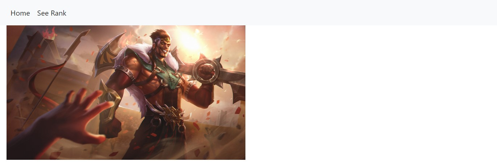
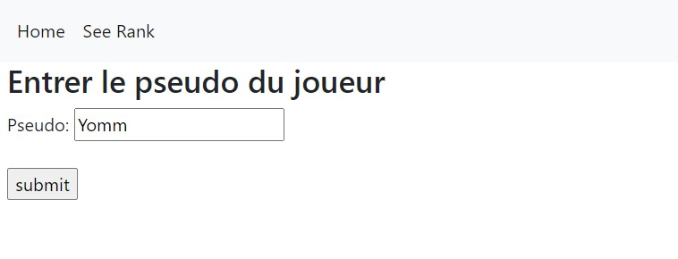
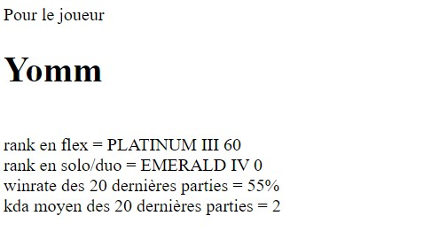</p>
<h2>Ce que j'ai prévu pour le second point POK<a id="section-3"></a></h2>
<ul>
<li>
<p>Rédiger un Notebook permettant de montrer comment utiliser l'API pour automatiser les requêtes</p>
</li>
<li>
<p>Rédiger un Notebook permettant de lancer une application web interactive, on pourra y rentrer le pseudo d'un joueur et voir les informations du comptes</p>
</li>
<li>
<p>Améliorer de l'interface de l'application</p>
</li>
<li>
<p>Ajout et traitement de nouvelles données issues de l'API (personnage le plus joué et taux de victoire associé )</p>
</li>
<li>
<p>Ajout d'illustration (icone choisie dans le jeu, icone des champions...)</p>
</li>
<li>
<p>Correction des bugs faisant planter l'application</p>
</li>
</ul>
<h2>Ce que j'ai fait à la fin du temps 1 <a id="section-4"></a></h2>
<ul>
<li>
<p>Notebook permettant de montrer comment utiliser l'API pour automatiser les requêtes (des extraits de ce notebook sont utilisés sur cette page, mais vous pouvez retrouver le fichier complet sur github).</p>
</li>
<li>
<p>Notebook permettant de lancer une application web interactive.</p>
</li>
<li>
<p>Amélioration de l'interface graphique et ajout de données.</p>
</li>
<li>
<p>Correction des bugs (gestion des cas limite : données non trouvées...)</p>
</li>
</ul>
<p>Présentation des pages de l'application :</p>
<h3>Page d'accueil<a id="subsection-5"></a></h3>
<p>Les 3 icones forment une barre de navigation, il faut cliquer sur le jeu désiré.</p>
<p>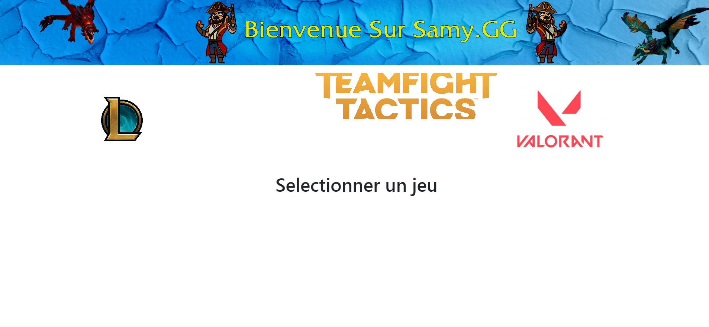</p>
<h3>Page du jeu TFT<a id="subsection-6"></a></h3>
<p>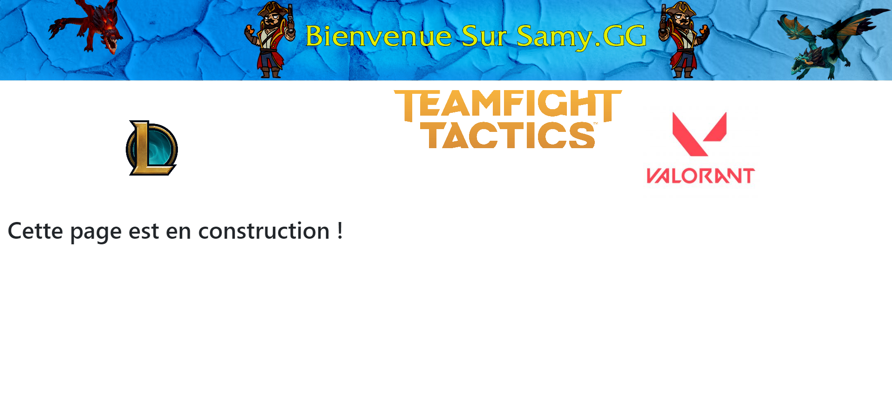</p>
<h3>Page du jeu Valorant<a id="subsection-7"></a></h3>
<p></p>
<h3>Page du jeu League of Legends<a id="subsection-8"></a></h3>
<p>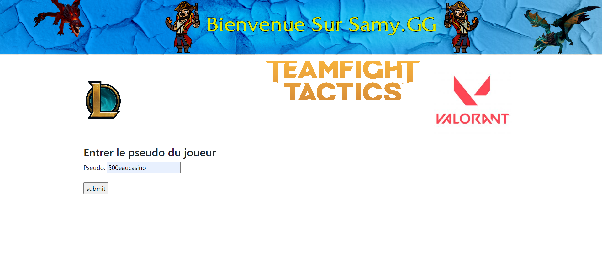</p>
<h3>Comparaison avec des statistiques issues du site OP.GG<a id="subsection-9"></a></h3>
<p>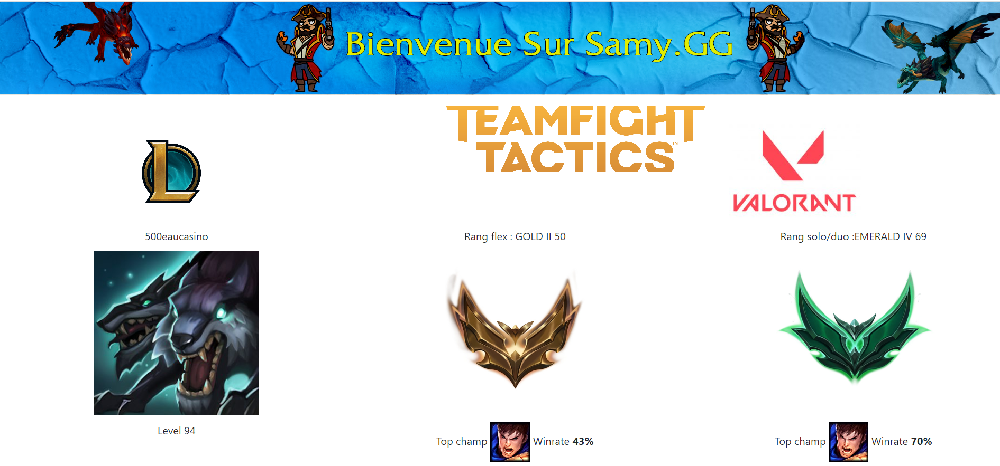</p>
<p>Comparaison avec le site <a href="http://op.gg">op.gg</a> qui permet d'avoir des statistiques :
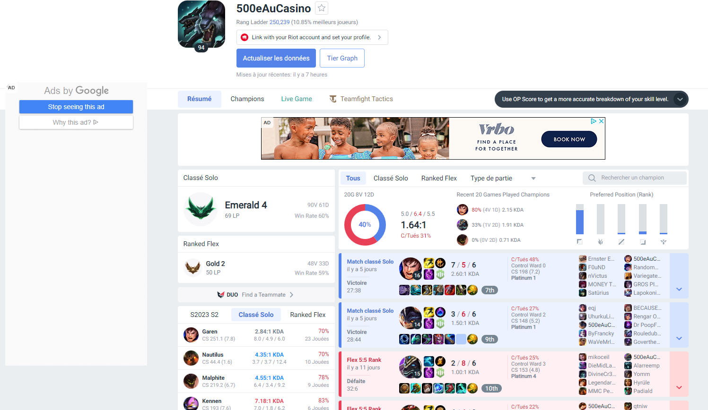
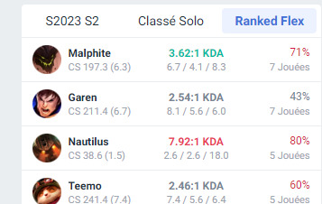</p>
<p>On peut voir sur le site que les données coincident bien !</p>
<p>Pour un autre joueur :</p>
<p>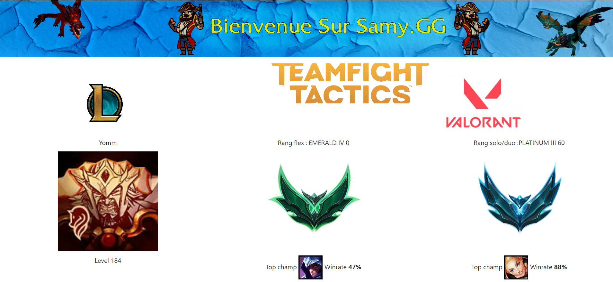</p>
<p>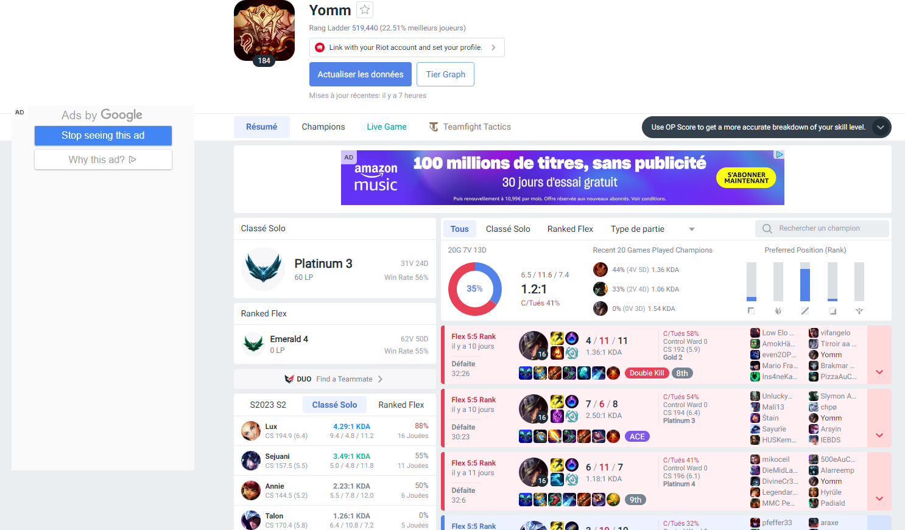
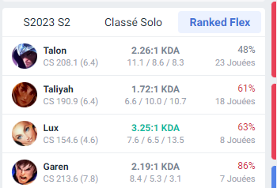</p>
<h2>Conclusion <a id="section-5"></a></h2>
<p>Je suis assez content du résultat obtenu, mais je n'ai clairement pas réussi à estimer mon temps correctement car j'ai passé beaucoup plus de temps que prévu sur ce premier POK.
En revanche, cela m'a permis d'aller plus loin que prévu donc je ne pense pas continuer sur ce sujet.</p>
<div class="quote relative  py-2 drop-shadow rounded rounded-tl-none rounded-bl-none border-solid border-l-8 border-pink-500 bg-pink-100">
<svg class="absolute w-7 h-7 pl-1 pt-0.5 pb-0.5 text-pink-500" xmlns="http://www.w3.org/2000/svg" fill="none" viewBox="0 0 24 24" stroke="currentColor" stroke-width="2">
  <path stroke-linecap="round" stroke-linejoin="round" d="M12 6.253v13m0-13C10.832 5.477 9.246 5 7.5 5S4.168 5.477 3 6.253v13C4.168 18.477 5.754 18 7.5 18s3.332.477 4.5 1.253m0-13C13.168 5.477 14.754 5 16.5 5c1.747 0 3.332.477 4.5 1.253v13C19.832 18.477 18.247 18 16.5 18c-1.746 0-3.332.477-4.5 1.253"></path>
</svg>
<div class="pl-8 mb-2 mr-8">
<p><u>Ressources</u></p>
</div><div class="pl-8 mr-8">
<ul>
<li><a href="https://www.youtube.com/watch?v=jkzq9j5yeT8&amp;list=PL3vL1pnMCbUERqllcwhcvEJbKum-M9zT5">Playlist de iTero Gaming à propos de l'API</a>.</li>
<li><a href="https://www.youtube.com/watch?v=Yh23ZtfYOSs">Guide pour utiliser Flask</a></li>
<li><a href="https://www.artstation.com/artwork/vD2bwv">Illustrations</a></li>
<li><a href="https://github.com/SamyDiafat/API-Riot-Games">Le lien vers mon github</a></li>
<li><a href="https://developer.riotgames.com/docs/lol#data-dragon">RiotGames data (icones...)</a></li>
</ul>
</div></div>


</article>

        </main>


        <footer class="min-h-[50px] border-t-2 border-gray-200 mt-4">
            <div class="max-w-[1000px] mx-auto px-4">
                <div class="min-h-[50px] flex justify-center items-center">
                    <p class="text-center">
                        <span style="font-family: Consolas, sans-serif;">Do_<span style="color: #4a86e8">It</span></span> : Développent et Organisation en IT
                    </p>
                </div>
            </div>
        </footer>

        <script>
        MathJax
            .startup
            .document
            .getMathItemsWithin(document.body);
        </script>
        
            <script src="/do-it/assets/node_modules/prismjs/components/prism-python.min.js"></script>
        
            <script src="/do-it/assets/node_modules/prismjs/components/prism-bash.min.js"></script>
        
            <script src="/do-it/assets/node_modules/prismjs/components/prism-yaml.min.js"></script>
        
            <script src="/do-it/assets/node_modules/prismjs/components/prism-json.min.js"></script>
        
            <script src="/do-it/assets/node_modules/prismjs/components/prism-sql.min.js"></script>
        
            <script src="/do-it/assets/node_modules/prismjs/components/prism-docker.min.js"></script>
        
            <script src="/do-it/assets/node_modules/prismjs/components/prism-toml.min.js"></script>
        
            <script src="/do-it/assets/node_modules/prismjs/components/prism-markdown.min.js"></script>
        
            <script src="/do-it/assets/node_modules/prismjs/components/prism-java.min.js"></script>
        
            <script src="/do-it/assets/node_modules/prismjs/components/prism-javascript.min.js"></script>
        
            <script src="/do-it/assets/node_modules/prismjs/components/prism-typescript.min.js"></script>
        
            <script src="/do-it/assets/node_modules/prismjs/components/prism-css.min.js"></script>
        
            <script src="/do-it/assets/node_modules/prismjs/components/prism-scss.min.js"></script>
        
            <script src="/do-it/assets/node_modules/prismjs/components/prism-html.min.js"></script>
        
            <script src="/do-it/assets/node_modules/prismjs/components/prism-c.min.js"></script>
        
            <script src="/do-it/assets/node_modules/prismjs/components/prism-cpp.min.js"></script>
        
            <script src="/do-it/assets/node_modules/prismjs/components/prism-rust.min.js"></script>
        
            <script src="/do-it/assets/node_modules/prismjs/components/prism-go.min.js"></script>
        
            <script src="/do-it/assets/node_modules/prismjs/components/prism-ada.min.js"></script>
        
            <script src="/do-it/assets/node_modules/prismjs/components/prism-csharp.min.js"></script>
        
            <script src="/do-it/assets/node_modules/prismjs/components/prism-apex.min.js"></script>
        
            <script src="/do-it/assets/node_modules/prismjs/components/prism-arduino.min.js"></script>
        
            <script src="/do-it/assets/node_modules/prismjs/components/prism-csv.min.js"></script>
        
            <script src="/do-it/assets/node_modules/prismjs/components/prism-javadoc.min.js"></script>
        
            <script src="/do-it/assets/node_modules/prismjs/components/prism-kotlin.min.js"></script>
        
            <script src="/do-it/assets/node_modules/prismjs/components/prism-objectivec.min.js"></script>
        
            <script src="/do-it/assets/node_modules/prismjs/components/prism-pascal.min.js"></script>
        
            <script src="/do-it/assets/node_modules/prismjs/components/prism-perl.min.js"></script>
        
            <script src="/do-it/assets/node_modules/prismjs/components/prism-php.min.js"></script>
        
            <script src="/do-it/assets/node_modules/prismjs/components/prism-r.min.js"></script>
        
            <script src="/do-it/assets/node_modules/prismjs/components/prism-ruby.min.js"></script>
        
            <script src="/do-it/assets/node_modules/prismjs/components/prism-scala.min.js"></script>
        
            <script src="/do-it/assets/node_modules/prismjs/components/prism-swift.min.js"></script>
        
            <script src="/do-it/assets/node_modules/prismjs/components/prism-lua.min.js"></script>
        
            <script src="/do-it/assets/node_modules/prismjs/components/prism-makefile.min.js"></script>
        
            <script src="/do-it/assets/node_modules/prismjs/components/prism-matlab.min.js"></script>
        
            <script src="/do-it/assets/node_modules/prismjs/components/prism-mermaid.min.js"></script>
        
            <script src="/do-it/assets/node_modules/prismjs/components/prism-ocaml.min.js"></script>
        
            <script src="/do-it/assets/node_modules/prismjs/components/prism-powershell.min.js"></script>
        
            <script src="/do-it/assets/node_modules/prismjs/components/prism-visual-basic.min.js"></script>
        
            <script src="/do-it/assets/node_modules/prismjs/components/prism-wasm.min.js"></script>
        
            <script src="/do-it/assets/node_modules/prismjs/components/prism-xml-doc.min.js"></script>
        
            <script src="/do-it/assets/node_modules/prismjs/components/prism-zig.min.js"></script>
        
    </body>
</html>
